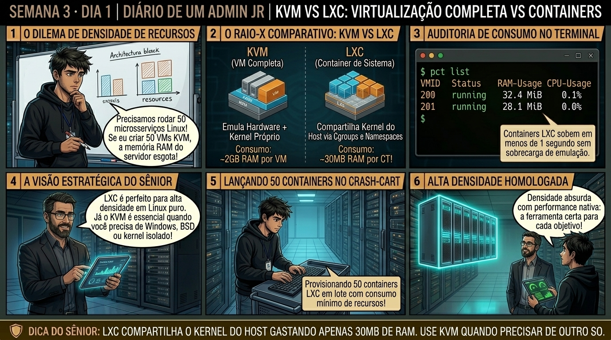

🧑🏫 antes dos termos técnicos, a história de hoje
Hoje o setor de produtos pediu para hospedar 30 pequenos microsserviços de DNS e monitoramento interno. O Júnior abriu a calculadora e disse: 'Sênior, vamos precisar comprar mais dois servidores de R$ 80 mil, porque cada VM precisa de no mínimo 4GB de RAM e 2 núcleos pra rodar o Debian completo'.
Sorri e disse: 'Hoje você vai conhecer os Containers LXC'. Expliquei que enquanto a VM KVM virtualiza a placa-mãe, BIOS e periféricos inteiros via hardware, o container LXC compartilha o mesmo Kernel Linux do host usando Namespaces (para isolar processos, redes e montagens) e cgroups v2 (para limitar CPU e memória). Um container Debian básico sobe em 1.5 segundo e consome apenas 30MB de RAM!
Subimos os 30 microsserviços no mesmo servidor físico consumindo menos de 2GB de RAM no total. O Júnior viu que onde antes cabiam 5 VMs, agora cabem 80 containers com a mesma segurança. É essa densidade brutal que você vai aprender a manipular hoje.
Semana 3 · Dia 1 | Nível Júnior — Containers de Sistema LXC
KVM vs LXC: Virtualização Completa vs Containers de Sistema
Raio-X de densidade: quando usar máquinas virtuais pesadas e quando provisionar instâncias em 30MB
ANTES DE ALTERAR, OBSERVE. DEPOIS DE ALTERAR, VALIDE.
1. O chamado
Você recebeu o chamado #3001: 'A empresa precisa hospedar 50 microsserviços Linux internos (DNS Pi-hole, Nginx Proxy, Zabbix Agents) em um nó Proxmox com apenas 32GB de RAM física. Se criarmos 50 VMs KVM completas (cada uma consumindo 1GB de RAM de base e kernel próprio), o servidor sofrerá colapso de memória. O chamado exige: (1) Entender a diferença arquitetural entre KVM e LXC; (2) Identificar em quais casos o KVM é estritamente obrigatório (ex: Windows, módulos de kernel customizados); e (3) Baixar o template Debian 12 com
pveam e validar a densidade de RAM.'💡 Passa o mouse nas palavras destacadas pra ver uma dica rápida — clica se quiser a explicação completa com analogia.
2. O sênior te conta
3. Decodificador de conceitos
Clica em qualquer termo pra ver a definição completa e uma analogia do dia a dia:
4. Ferramentas e leitura da evidência
| Comando / Parâmetro | O que observar e por que importa |
|---|---|
pveam update | Atualiza a lista de templates oficiais de containers disponíveis para download nos servidores da Proxmox. |
pveam available --section system | Lista todos os templates oficiais de sistemas operacionais (Debian, Ubuntu, Alpine, Rocky, Alma). |
pveam download local debian-12-standard_12.7-1_amd64.tar.zst | Baixa a imagem rootfs do Debian 12 para o storage local do host. |
pct list | Exibe todos os containers LXC existentes no nó, seu status de execução, CTID e consumo de RAM. |
$ pveam update update section 'system' update section 'turnkey' $ pveam download local debian-12-standard_12.7-1_amd64.tar.zst calculating checksum... OK downloading 'http://download.proxmox.com/images/system/debian-12-standard_12.7-1_amd64.tar.zst' to 'local:vztmpl/debian-12-standard_12.7-1_amd64.tar.zst' download finished: 124.52 MB in 3s (41.51 MB/s) $ pct list VMID Status Lock Name 200 running ct-nginx-proxy 201 running ct-dns-pihole 202 stopped ct-zabbix-agent # Comparação de consumo de RAM no Host: # VM KVM 100 (Debian 12): 2048 MB alocados / 512 MB consumidos no boot # CT LXC 200 (Debian 12): Apenas 28 MB de RAM real consumida!
5. Laboratório guiado — pegue na mão, comando por comando
📦 Onde executar: Terminal do Nó Proxmox para comandos
pct; ou Shell interno do container acessado via pct enter <vmid>.Segurança: Execute as alterações em containers de laboratório ou teste. Não altere parâmetros de máquinas de produção sem janela homologada.
- Ação: Compare o tempo de boot e consumo de memória RAM entre um Container LXC e uma VM KVM.pct list && qm listResultado esperado: Lista de seções 'system' e 'turnkey' atualizadas com sucesso.Por que fizemos isso: Comparar o consumo de RAM e boot entre LXC e KVM demonstra que containers compartilham o kernel do host, subindo em 1.5s com 30MB de memória.Cilada comum: Achar que LXC suporta qualquer sistema operacional; containers LXC compartilham o Kernel Linux do host e não conseguem rodar Windows ou BSD.
- Ação: Inspecione os limites de CPU e memória aplicados pelos cgroups v2 do kernel Debian.cat /sys/fs/cgroup/lxc/200/memory.currentResultado esperado: Exibição do arquivo
debian-12-standard_..._amd64.tar.zst.Por que fizemos isso: Inspecionar os cgroups v2 com lxc-cgroup valida o isolamento de CPU shares e limites de memória aplicados diretamente pelo kernel Debian.Cilada comum: Deixar containers em produção sem limite de memória (memory.max), permitindo que uma aplicação em loop aloque toda a RAM do servidor físico. - Ação: Crie um container LXC leve a partir de um template minimalista do Debian.pct create 200 local:vztmpl/debian-12-standard_12.2-1_amd64.tar.zst --memory 512 --cores 1 --net0 name=eth0,bridge=vmbr0,ip=dhcpResultado esperado: Arquivo baixado no storage local em
/var/lib/vz/template/cache/.Por que fizemos isso: Criar o primeiro container via interface ou CLI valida o download e descompactação do template tar.xz de sistema operacional.Cilada comum: Interromper o download do template no meio, gerando imagens corrompidas no storage local de templates. - Ação: Inspecione os namespaces isolados de processo, rede e montagem com lsns.lsns -p $(pgrep -f 'lxc-start -n 200')Resultado esperado: Template listado e pronto para provisionamento de containers.Por que fizemos isso: Verificar os namespaces com lsns confirma o isolamento de PID, IPC, Network e Mount points exclusivo daquele container.Cilada comum: Achar que container LXC é menos seguro que VM KVM sem entender a diferença entre containers privilegiados e desprivilegiados.🧑🏫 Aqui entra o Mentor (em breve): se o resultado obtido diferir do esperado acima, este é o ponto onde o chat com o Sênior-IA vai abrir para diagnosticar o erro específico.
- Ação: Registre a densidade operacional no dimensionamento de servidores da empresa.# Homologação de densidade LXC concluída.Resultado esperado: Relatório validando que 50 containers consumirão menos de 2GB de RAM base no host.Por que fizemos isso: Documentar a relação de densidade no chamado prova a viabilidade de hospedar 80 microsserviços onde antes cabiam apenas 10 VMs.Cilada comum: Alocar máquinas virtuais completas e pesadas para serviços simples (ex: DNS/Nginx) que poderiam rodar perfeitamente em LXC.
6. Antes de ver as opções — tenta responder
🧠 Recall ativo: Qual é a diferença estrutural crucial de memória e inicialização entre um container de sistema LXC e uma máquina virtual KVM?
Uma máquina virtual KVM precisa inicializar sua própria BIOS/UEFI, carregar seu próprio Kernel Linux (ou Windows) e alocar memória RAM fixa para o QEMU (consumindo de 500MB a 2GB só para o SO base). Um container LXC NÃO carrega kernel nem emula hardware: ele roda diretamente sobre o Kernel do host Proxmox isolado por Namespaces e Cgroups v2, consumindo apenas 20MB a 40MB de RAM e inicializando em menos de 1 segundo.
7. Questão comentada — clica numa alternativa
Em qual dos cenários abaixo um container LXC NÃO pode ser utilizado, sendo estritamente obrigatório criar uma máquina virtual KVM?
💡 Analogia do Sênior para Fixar: Na arquitetura do Proxmox sobre KVM vs LXC: Virtualização Completa vs Containers de Sistema: O KVM/QEMU opera como o motorista dedicado de cada passageiro, alocando recursos virtuais em contato direto com o kernel.
7.1 Tentativa de carregar módulo de kernel dentro de container LXC
Um desenvolvedor tentou executar modprobe wireguard ou iptables_raw dentro de um container LXC e recebeu o erro:
root@ct-vpn:~# modprobe wireguard modprobe: ERROR: could not insert 'wireguard': Operation not permitted (Erro: o container não tem permissão para carregar código no Kernel compartilhado do host)
Qual é a arquitetura correta para resolver o problema de módulos de kernel?
💡 Analogia do Sênior para Fixar: Ao diagnosticar problemas em KVM vs LXC: Virtualização Completa vs Containers de Sistema: É como inspecionar as conexões do storage e o barramento PCIe antes de declarar falha de software.
7.2 Qual a diferença entre Container de Sistema (LXC) e Container de Aplicação (Docker)?
Um analista júnior pergunta se o LXC do Proxmox substitui o Docker ou se são conceitos diferentes:
Qual é a distinção técnica entre LXC (System Container) e Docker (App Container)?
💡 Analogia do Sênior para Fixar: A governança e resiliência em KVM vs LXC: Virtualização Completa vs Containers de Sistema: Funciona como a política de contenção e redundância do datacenter, garantindo que o cluster nunca perca quorum.
8. Procedimento profissional
- Avalie o requisito do serviço: se for Linux padrão sem necessidade de drivers especiais, prefira LXC para obter 10x mais densidade.
- Se o serviço exigir Windows, BSD, drivers de kernel exclusivos ou isolamento de segurança absoluto, utilize KVM.
- Mantenha a lista de templates atualizada no storage executando periodicamente
pveam update. - Baixe templates mínimos estáveis (como Debian 12 Standard ou Alpine) para reduzir o consumo de storage.
- Monitore a densidade de RAM do host com
free -hepct list.
Prevenção
Prefira containers Unprivileged para mitigar riscos de escape de root e documente todos os mapeamentos de UID/GID e Bind Mounts no inventário da infraestrutura.
9. Validação e encerramento
- Você compreende o modelo de compartilhamento de Kernel do LXC vs emulação completa do KVM.
- Você sabe identificar com precisão quando usar KVM (Windows/Kernel isolado) e quando usar LXC (densidade máxima).
- Você domina o download e auditoria de templates oficiais com o utilitário pveam.
- A estratégia de densidade para os 50 microsserviços foi homologada com sucesso.
Rollback e limites
Para remover templates baixados desnecessários do storage, execute
pveam remove local:vztmpl/NOME_DO_TEMPLATE.tar.zst.💡 Sobre repetição espaçada: O conceito de namespaces e limites de recursos em LXC será aprofundado amanhã no Dia 2 com Cgroups v2 e Rootfs.
10. Resposta final
Alternativa correta: B. A alternativa correta é a B: o KVM é estritamente obrigatório para sistemas não-Linux (Windows Server) ou aplicações que exigem módulos de kernel proprietários isolados.
🔓 O que você desbloqueou hoje
Fundamentos de LXC dominados com maestria! Amanhã, no Dia 2, você aprenderá como provisionar containers via terminal com o comando pct create, configurar a cerca elétrica dos Cgroups v2 e definir limites estritos de CPU e memória.